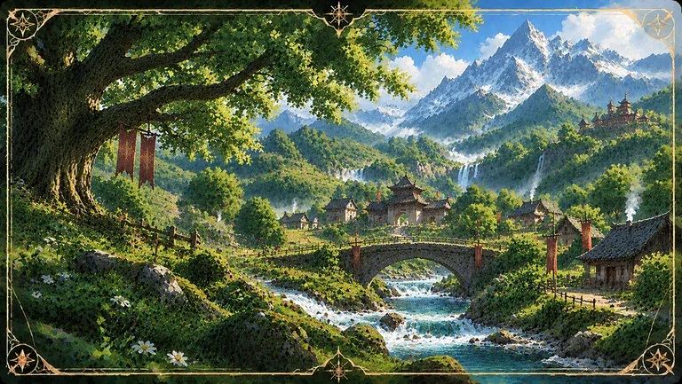

Masuki desa
Buat ruangan atau bergabung dengan pemain lain. Tema kartu menentukan pilihan karakter dan tampilan yang tersedia.
GIM DEDUKSI SOSIAL · KARTU & MUSYAWARAH
Selamat datang di Embun, gim multiplayer berbasis kartu tentang kepercayaan, rahasia, dan nasib sebuah desa.
Warga Desa bekerja merawat Hayu. Di antara mereka, Si Terbisik bergerak dengan tujuan berbeda. Baca situasi, gunakan kartu, dan temukan siapa yang dapat dipercaya.
Bermain melalui browser. Masuk dengan Google, lalu pilih nama panggilanmu.

DI BALIK KARTU
Embun mempertemukan strategi kartu dengan percakapan dan keputusan kelompok.
Buat ruangan atau bergabung dengan pemain lain. Tema kartu menentukan pilihan karakter dan tampilan yang tersedia.
Terima peran, kelola kartu dan sumber daya, lalu hadapi fase siang, malam, serta kunjungan ke tempat di desa.
Bertukar informasi dalam musyawarah, pertimbangkan tuduhan, dan gunakan voting untuk menentukan langkah desa berikutnya.
SATU PROFIL UNTUK KEMBALI BERMAIN
Google digunakan untuk masuk ke akun Embun. Pada pengaturan awal, kamu dapat memilih nama panggilan dan avatar. Profil tersimpan sehingga nama tidak perlu diketik ulang saat masuk ruangan berikutnya.
Nama panggilan, tindakan, dan percakapan permainan dapat terlihat oleh pemain lain sesuai fitur yang digunakan. Jangan menuliskan data pribadi dalam chat.
Bagaimana Embun menggunakan data →KONTAK PENGELOLA
Untuk bantuan akun, laporan masalah, atau permintaan terkait data pribadi, hubungi pengelola melalui email.